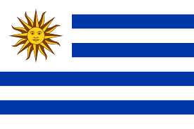
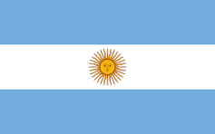
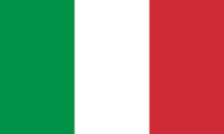
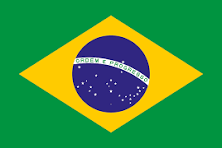
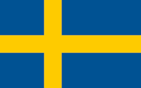
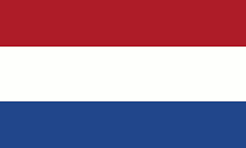
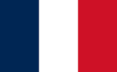

O Arquivo da Copa do Mundo
1930: O Nascimento de uma Lenda
Antes de ser criada a Copa do Mundo, a FIFA reconhecia o país medalha de ouro de futebol nos Jogos Olímpicos como o campeão mundial. Numa conferência em Amsterdã, em 1928, o francês Jules Rimet, presidente da entidade máxima do esporte, anunciou que criaria um torneio à parte. No ano seguinte, em uma reunião em Barcelona, escolheu o Uruguai como sede. Houve dois critérios: primeiro, o fato de 1930 ser o ano do centenário da independência do país. Além disso, a Celeste vinha de dois títulos olímpicos seguidos, em 1924 e 1928.

Uruguai

Argentina

Estados Unidos
1934: Política em Jogo
A desistência da Suécia de ser a sede da Copa a dois anos da competição abriu o caminho. A Itália do ditador fascista Benito Mussolini tinha motivos óbvios para querer realizar a competição. Afinal, que propaganda seria melhor, àquela altura, para o seu regime autoritário? A jogada política foi a mesma adotada por Hitler quando levou para a Alemanha as Olimpíadas de 1936. E foi o general Giorgio Vaccaro o homem nomeado por Mussolini para ser o interlocutor com a FIFA. No Congresso para a escolha da sede, em 1932, em Estocolmo, na Suécia, garantiu que dinheiro para o Mundial não seria problema. Os delegados dos 29 países presentes votaram a favor do país.

Itália

Tchecoslováquia

Alemanha
1950: O Retorno do Futebol
Desde 1938, o Brasil pleiteava ser sede de Mundial. A Alemanha também. Veio a Segunda Guerra. Duas Copas não foram realizadas - 1942 e 1946. No Congresso pós-Guerra da FIFA, em 1946, os alemães, semidestruídos, retiraram sua candidatura. Apenas o Brasil a manteve. E um país sul-americano voltava a ser o centro das atenções no futebol. Antes marcado para 1949, o torneio acabou adiado por um ano.
Uruguai

Brasil

Suécia
1962: A Força da Persistência
Foram quatro os candidatos a ser a sede da Copa de 1962: Espanha, Alemanha, Argentina e Chile. A FIFA deixou logo claro que, depois de dois Mundiais seguidos na Europa, era a vez da América do Sul. Com isso, sobraram Argentina e Chile, considerado por muitos um país pobre. Mas com o apoio de Carlos Dittborn Pinto, filho de diplomata chileno, 32 dos 56 países-membros votaram no Chile como sede - 11 cravaram Argentina e 13 se abstiveram - no Congresso de 1956. Quatro anos depois, em 1960, após terremoto no país que deixou mais de dois milhões de vítimas, entre mortos, feridos e desabrigados, a FIFA quase mudou de ideia. Dittborn, contudo, garantiu a realização do Mundial. Pena que, um mês antes do começo, o dirigente morreu. Recebeu a homenagem no nome do estádio em Arica.
Brasil
Tchecoslováquia

Chile
1974: O Palco Alemão
Demorou para a Alemanha receber uma Copa do Mundo. Desde sempre uma das principais potências do esporte, o país foi prejudicado pelo regime nazista e seu consequente envolvimento na Segunda Guerra Mundial. Seria natural que recebesse uma Copa nas décadas de 40 e 50, mas o próprio conflito e depois a necessidade de reconstrução da nação germânica adiaram o objetivo. Acabou acontecendo em 1974. A Espanha chegou a concorrer com a Alemanha, mas retirou a candidatura em troca de apoio oito anos depois.
Alemanha

Holanda
Polônia
1978: O Título da Polêmica
A Argentina, que já havia sido candidata em 1962, finalmente conseguiu sediar o torneio. No entanto, a Copa de 1978 ficou marcada por um forte contexto político, com o país sob uma ditadura militar. A desconfiança sobre a legitimidade da competição cresceu após a vitória da Argentina sobre o Peru por 6 a 0, resultado que, de forma controversa, garantiu a vaga na final, eliminando o Brasil. Apesar das suspeitas, a Argentina se sagrou campeã em casa, erguendo sua primeira taça mundial.
1982: O Futebol Arte do Brasil e a Força da Itália
A Espanha foi a sede da Copa de 1982, um torneio que, para muitos, ficou marcado por duas histórias paralelas. A primeira foi a da seleção brasileira, que com um time recheado de craques como Zico, Sócrates e Falcão, encantou o mundo com seu futebol ofensivo e vistoso, mas acabou sendo eliminada pela Itália na fatídica "Tragédia do Sarriá". A segunda foi a própria ascensão da seleção italiana, que, liderada pelo artilheiro Paolo Rossi, superou as dificuldades da primeira fase e cresceu na competição, conquistando seu terceiro título mundial.
Itália
Alemanha Ocidental
Polônia
1986: O Gênio de Maradona
Originalmente, a Colômbia seria a sede da Copa de 1986, mas desistiu por problemas financeiros. O México, que já havia sediado o torneio em 1970, foi escolhido novamente para o lugar. A competição é, até hoje, lembrada como a Copa de Diego Maradona. O craque argentino carregou sua seleção, protagonizando momentos icônicos como o gol de mão e o golaço antológico contra a Inglaterra, e liderou a Argentina rumo ao seu segundo título mundial.
Argentina
Alemanha Ocidental

França
1990: A Revanche Alemã
A Copa do Mundo de 1990 foi sediada na Itália e é lembrada por um futebol mais defensivo e com poucos gols, mas a final foi um capítulo à parte. A Alemanha Ocidental e a Argentina se reencontraram na final, na mesma situação da Copa anterior. Com um elenco forte e a base da equipe de 1986, a Alemanha dominou a partida e venceu por 1 a 0, com um gol de pênalti de Andreas Brehme no final. O título foi um marco histórico, sendo o último conquistado pela Alemanha Ocidental antes da reunificação do país.
Alemanha Ocidental
Argentina

Inglaterra
1994: O Tetracampeonato do Brasil
O palco da Copa de 1994 foi os Estados Unidos, um país onde o futebol não era o esporte principal. A competição foi um sucesso de público, com a grande maioria dos jogos sendo realizados em estádios lotados. Após 24 anos de jejum, a seleção brasileira, liderada por Romário e Bebeto, chegou à final contra a Itália. A decisão foi para os pênaltis, e o Brasil, com a defesa de Taffarel e o erro de Roberto Baggio, conquistou o tão sonhado tetracampeonato mundial, celebrando o título com a famosa faixa em homenagem ao piloto Ayrton Senna.